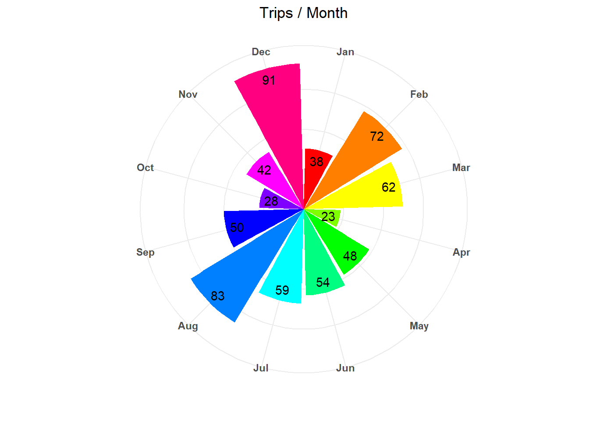
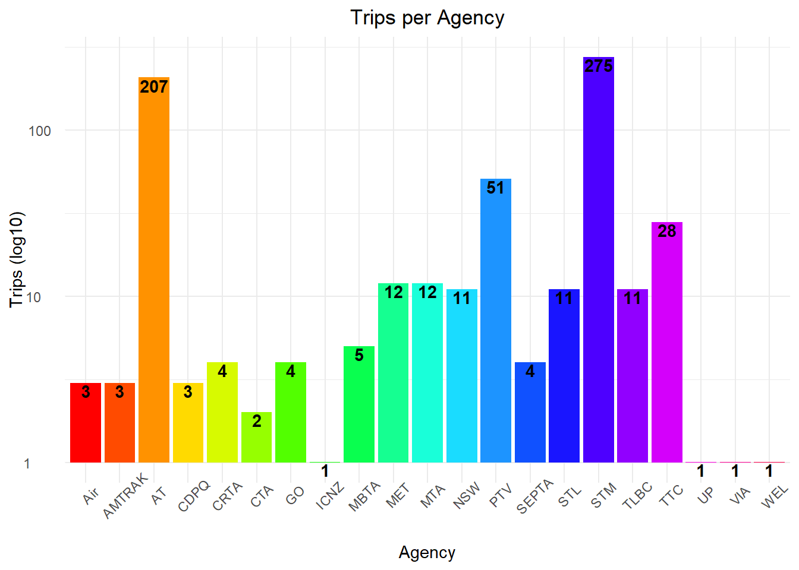

# install.packages(c("tidyverse", "googlesheets4"))
library(tidyverse)Alice in Motion (2)
Personal transit data in R
Code availability
Find the code (and a version of the data) used to generate this on my github.
Packages
Adventures in Public Transport
One of my favourite feelings is adventure. The joy of discovery is unparalleled, the sense of gaining knowledge and then remembering it for all that is to come. That may be what drew me to my love of transit. There is so much information available, some known and others unknown, and I can observe it at the scale of my individual experience.
One of my close friends began recording her bus trips in a Google Sheet in April 2022. She shared this with me in the fall when I noticed her doing a quick data entry on the bus we caught together. She shared that you can identify the year a bus entered service with the STM (Montreal’s transit agency) by the first two digits of its identification number. For example, a bus labelled 38-020 entered service in 2018 (calculated from 1980, so 1980 + 38). This small nugget of information led to me following in her example and recording my own transit trip data. I frequently use Transit and was beginning to submerging myself in world of geospatial data, so it seemed a logical step to start making observations of my own transit patterns. Due to its relative ease (and low cost of ‘free’) I recorded my trips in Google Sheets which means that we begin with harvesting that data!
Data from Google Sheets
transit_url <- "https://docs.google.com/spreadsheets/d/SPREADSHEET_ID/edit#gid=SHEET_ID"
# As provided by `googlesheets4::`
transit <- googlesheets4::read_sheet(transit_url, sheet = 1, col_types = "Dcccccdcccclcc")
# Read in the daily transit data sheet, adding some simple classification in `col_types`
key <- googlesheets4::read_sheet(transit_url, sheet = 2)
# Read in the key sheetIf you want to replicate this exact process, you will likely need to alter the col_types information, allow googlesheets4::
to interface with your Google account, and tailor it to your own data.
It was incredibly straightforward for me which was quite a relief!
Data Cleaning
To keep data recording simple (at the beginning), I started by tracking the central pieces of my journey: the date, what time I got on and off the vehicle, what line, the stop I boarded and alighted at, and the unit number. Later, I added information about whether I transferred to another vehicle, what mode I (personally) classify it as, and some Google Sheets wizardry (contributed by Laura) to check if I had ridden that specific vehicle before. This resulted in 14 (15 for 2024) variables that can be manipulated into something more useful for visualization and analysis.
# If you import your data directly from Google Sheets, you don't need these next two lines, but if following with my data, keep it present.
transit <- read_csv("transit.csv")
key <- read_csv("key.csv")
colnames(transit) # All 15 of those original variables [1] "Date" "Time Boarded" "Line" "Name"
[5] "Direction" "Bus" "Ridden before?" "Stop Boarded"
[9] "Stop Alighted" "Time Alighted" "Comments" "Transfer"
[13] "Mode" "Rating (0-7)" "Other_notes" My data has a few quirks. I’ve had difficulties in the past dealing
with time, date, datetime, and duration data in R (I am no stranger to lubridate::’s handy guides) and this data has a lot of that. Additionally, the daily transit data (stored in origin.csv) has includes agency and line number information stored in the Line column! Let’s wrangle this data into something usable.
transit <- transit %>%
mutate(
# woo getting time to parse neatly -------------------------------------------
# (not dealing with time zones. for understandable reasons. forgive me.)
`Time Boarded` = hms::parse_hm(`Time Boarded`),
`Time Alighted` = hms:: parse_hm(`Time Alighted`),
# Fancy 'did a ride go past midnight?' detector for correct duration values --
# this breaks for rides > 24hr long
Duration = ifelse(
(as.numeric(`Time Alighted`) - as.numeric(`Time Boarded`)) >= 0, # This tests if the duration went past midnight
dseconds(as.numeric(`Time Alighted`) - as.numeric(`Time Boarded`)), # if it didnt it's all good
duration(as.numeric(`Time Alighted`) - as.numeric(`Time Boarded`) + 86400) # if it did it has to add 1 days worth of seconds
),
# Datetime variables for neat visualisations in the future -------------------
DT_Boarded = ymd_hms(paste0(Date, " ", as.character(`Time Boarded`))),
DT_Alighted = ymd_hms(paste0(Date, " ", as.character(`Time Alighted`))),
# Like the duration code above, this checks if a ride went past midnight to adjust `DT_Alighted`
DT_Alighted = if_else(
(as.numeric(`Time Alighted`) - as.numeric(`Time Boarded`)) >= 0 | is.na(`Time Alighted`),
# Returns TRUE if duration is positive OR if it's missing `Time Alighted`
DT_Alighted, # If duration is positive (TRUE) returns the established `DT_Alighted`
DT_Alighted + 86400 # If neg (FALSE) adds a day to `DT_Alighted`
)
)This deals with the pesky time data, but creating all those datetime variables will be helpful for any future visualizations or analysis! Now, let’s sort the combined agency and line number column.
transit <- transit %>%
mutate(
# String stuff for separating `Agency` and `Line_num`, both contained in `Line`
# see `key` to decode `Agency`
# "i paid for the whole tidyverse and goddammit i'll use it all"
Agency = if_else(
str_detect(Line, "[:alpha:]", negate = T), # Checks if `Line` has any letters
"STM", # If not (see the `negate = T`) it's the STM (yeah i formatted my data with the STM as default. and that's legacy, baby!)
str_split_i(Line, "_", 1) # If it does contain alpha chars it splits the string at "_" and keeps the first bit
),
Line_num = if_else(
# Same dance as it ever was,
str_detect(Line, "[:alpha:]", negate = T),
Line, # If no letters, return `Line` bc again, STM default
str_split_i(Line, "_", 2) # If letters, return everything after "_"
)
)Perfect!
Now we have everything in a very ready and easy to use form. Let’s play!
Monthly tilable breakdowns
So, for my blog, I like to include breakdowns of the transit I’ve taken that month. Let’s make a cute way to generate that based on our selection:
start_date <- ymd("2023-07-08")
end_date <- ymd("2023-12-11")
monthly <- transit %>%
filter(DT_Alighted >= start_date &
DT_Alighted <= end_date) %>%
mutate(
Month = ifelse(DT_Alighted < ymd("2023-12-08"), 5, 6),
Month = ifelse(DT_Alighted < ymd("2023-11-08"), 4, Month),
Month = ifelse(DT_Alighted < ymd("2023-10-08"), 3, Month),
Month = ifelse(DT_Alighted < ymd("2023-09-08"), 2, Month),
Month = ifelse(DT_Alighted < ymd("2023-08-08"), 1, Month)
)
# Excludes all transit since home, i.e. exclusively non-north american transit
# Kinda bodgey way to do month divisions. Sorry.
# Computing their overall stat output
rbind(monthly %>% # doing this all in an rbind() is kinda yucky, thank you for noticing.
# fwiw i use rbind here to get the individual monthly data and total in the same tibble.
group_by(Month) %>%
summarise(
`Trips` = n(),
`Total travel time (hr)` = round(sum(Duration) / 3600, 2),
`Unique Lines` = n_distinct(Line),
`Unique Vehicles` = n_distinct(Bus),
`Unique destinations` = n_distinct(`Stop Boarded`, `Stop Alighted`),
Modes = n_distinct(Mode)),
monthly %>%
summarise(
`Trips` = n(),
`Total travel time (hr)` = round(sum(Duration) / 3600, 2),
`Unique Lines` = n_distinct(Line),
`Unique Vehicles` = n_distinct(Bus),
`Unique destinations` = n_distinct(`Stop Boarded`, `Stop Alighted`),
Modes = n_distinct(Mode)
) %>% mutate(
Month = "Overall")
) %>%
kableExtra::kable()| Month | Trips | Total travel time (hr) | Unique Lines | Unique Vehicles | Unique destinations | Modes |
|---|---|---|---|---|---|---|
| 1 | 53 | 14.47 | 18 | 47 | 46 | 3 |
| 2 | 86 | 40.38 | 52 | 78 | 83 | 9 |
| 3 | 41 | 10.13 | 21 | 38 | 32 | 3 |
| 4 | 39 | 9.43 | 23 | 38 | 34 | 2 |
| 5 | 43 | 9.50 | 30 | 41 | 42 | 4 |
| 6 | 16 | 3.25 | 11 | 16 | 15 | 4 |
| Overall | 278 | 87.17 | 100 | 236 | 228 | 9 |
Okay, but what if I wanted to make a fun little ‘transit wrapped’ style thing? Hm, let’s amalgamate some fun stats for all that now :). It’d be really neat to have to basically all ready to go for the New Year, so I could post it on 2023-12-31.
start_date <- ymd("2023-01-01")
end_date <- ymd("2023-12-31")
yearly <- transit %>%
filter(DT_Alighted >= start_date &
DT_Alighted <= end_date) #iirc this had some issue with not selecting the last date, make sure to double check that b4 posting (wasn't an issue as no entries on 2023-12-31)
# Overall stats
yearly %>%
summarise(
`# of Trips` = n(),
`Total Time (hr)` = round(sum(Duration) / 3600, 2),
`Unique Agencies` = n_distinct(Agency),
`Unique Lines` = n_distinct(Line),
`Unique Vehicles` = n_distinct(Bus),
`Unique destinations` = n_distinct(`Stop Boarded`, `Stop Alighted`),
Modes = n_distinct(Mode)
) %>%
kableExtra::kable()| # of Trips | Total Time (hr) | Unique Agencies | Unique Lines | Unique Vehicles | Unique destinations | Modes |
|---|---|---|---|---|---|---|
| 650 | 168.1 | 21 | 183 | 558 | 478 | 13 |
# Most ridden vehicle
yearly %>%
filter(`Ridden before?` == max(yearly$`Ridden before?`, na.rm = T)) %>%
.[1,] %>%
select(Line, Bus) %>%
kableExtra::kable()| Line | Bus |
|---|---|
| AT_Inner | NB4028 |
# Most ridden line
yearly %>%
group_by(Line) %>%
summarise(
trips = n()
) %>%
filter(trips == max(trips)) %>%
kableExtra::kable()| Line | trips |
|---|---|
| 1 | 87 |
# Most common trip
stopsandtrips <- yearly %>%
group_by(`Stop Boarded`, `Stop Alighted`) %>%
summarise(
trips = n()
)
stopsandtrips %>%
filter(trips == max(stopsandtrips$trips)) %>%
kableExtra::kable()| Stop Boarded | Stop Alighted | trips |
|---|---|---|
| des Pins / du Parc | des Pins / Côte-des-Neiges | 14 |
# Monthly trips
monthly_plot <- yearly %>%
mutate(
Month = month(DT_Boarded, label = T)
) %>%
ggplot(aes(x = Month, fill = ..x..)) +
geom_bar() +
geom_text(stat='count', aes(y = ..count.. - 7,label = ..count..)) +
coord_polar() +
scale_fill_gradientn(colors = rainbow(n = 12)) +
theme_minimal() +
labs(
title = "Trips / Month",
x = "",
y = ""
) +
guides(fill = "none") +
theme(axis.text.y = element_blank(),
plot.title = element_text(hjust = 0.5),
axis.text.x = element_text(face = "bold"))
monthly_plot
# Most ridden agency
agency_trips <- yearly %>%
group_by(Agency) %>%
summarise(
trips = n() + 0.01
) %>%
ggplot() +
geom_col(aes(
x = Agency,
y = trips,
fill = ..x..)) +
geom_text(aes(
x = Agency,
y = trips,
label = trips - 0.01,
vjust = 1.1
),
fontface = "bold") +
scale_y_log10() +
labs(
title = "Trips per Agency",
y = "Trips (log10)"
) +
scale_fill_gradientn(colors = rainbow(n = 20)) +
annotation_logticks(
sides = "l",
outside = T,
color = "white"
) +
coord_cartesian(clip = "off") +
guides(
fill = "none"
) +
theme_minimal() +
theme(
axis.text.x = element_text(angle = 45),
axis.text.y = element_text(hjust = -0.3),
plot.title = element_text(hjust = 0.5)
)
agency_trips
# How long was spent on the Green Line?
yearly %>%
filter(Line == "1") %>%
summarise(
`Total Duration` = (sum(Duration) / 3600)
) %>%
kableExtra::kable()| Total Duration |
|---|
| 8.216667 |
# And let's see what it looks like if this was done based on time spent, not # of trips?
yearly %>%
group_by(Line) %>%
summarise(
`Total Duration (hrs)` = round((sum(Duration) / 3600), 2)
) %>%
arrange(desc(`Total Duration (hrs)`)) %>%
left_join(., yearly, multiple = "any") %>%
select(Line, Name, `Total Duration (hrs)`, Mode) %>%
head(n = 10) %>%
kableExtra::kable()| Line | Name | Total Duration (hrs) | Mode |
|---|---|---|---|
| NSW_XPT | Overnight XPT | 12.00 | INTERCITY_TRAIN |
| ICNZ_IC6501 | Auckland - Wellington | 10.80 | INTERCITY_BUS |
| 1 | Green Line | 8.22 | METRO |
| 24 | Sherbrooke | 6.90 | BUS |
| AMTRAK_TE | Texas Eagle | 5.60 | INTERCITY_TRAIN |
| 144 | Av. Des Pins | 5.40 | BUS |
| VIA_CORR | Corridor | 5.37 | INTERCITY_TRAIN |
| AMTRAK_LS | Lincoln Service | 5.02 | INTERCITY_TRAIN |
| AT_70 | Botany to Britomart via Panmure | 4.67 | BUS |
| AT_GULF | Gulf Harbour Ferry | 3.63 | FERRY |
Woah! In case it wasn’t apparent, the numbers that you get with this data are very different. For some level of anonymity for myself, this is a subset of the true data. Let me be! If this isn’t enough data for whatever you’re trying to do, feel free to augment it with data from my 48 hours in Toronto.
I hope that this has been interesting and perhaps even useful to you. If it wasn’t, damn, that blows.